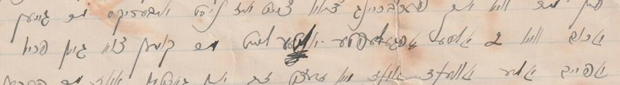

Genealogy in the Age of AI
My friend Paul's family has about a hundred and fifty letters, mostly handwritten in Yiddish, sent between 1900 and 1942. A man named Sam — Paul's great-grandfather — wrote most of them to his wife Dora, from Montreal, from London, from hotel rooms in Leipzig and Paris, across four decades of a marriage conducted substantially by post.
Nobody in the family reads Yiddish, and neither do I. Paul is the archivist and the family's own historian; I build the software. We have spent the past five weeks on this together.
That is the whole problem, and it is a common one — the letters had been in a box for the better part of a century, and the people who could have read them died before anyone thought to ask. So we did what a lot of people are now doing: we ran them through artificial intelligence. A handwriting recognition model trained on Yiddish script to get the words off the page, a large language model to turn those words into English, and a website to put the results somewhere the family could actually read them.
All of this took about five weeks, start to finish, working evenings. That number matters later.
We tried to be careful about it. Every transcription is labelled as AI work. Every letter sits next to a photograph of the original page, so you can always look at the thing itself. Where the software couldn't read a word, the site says so — there are thousands of those marks — and where two models disagreed, we kept both readings instead of quietly picking one.
Then we emailed a Yiddish cultural institution asking about their work, and a specialist there wrote back: "I'm curious to hear more about your process, particularly your reliance on AI to transcribe and translate these. I just took a look at your site and saw that there are many errors in the Yiddish transcription. It didn't surprise me, since there is a consensus in our field that machine-learning tools are not at the level to reliably transcribe and translate Yiddish. Moreover, Yiddish handwriting is infamously difficult even for humans to decipher."
If you spend time in genealogy forums, you already know this argument. Someone posts about the remarkable thing an AI just did with their great-grandmother's letters, and someone else — usually someone who actually reads the language — points out that the AI is confidently producing text that isn't there. The enthusiasts think the skeptics are gatekeeping. The skeptics think the enthusiasts are filling family histories with plausible fiction.
The skeptics are right. I want to say that early, because what follows is not a rebuttal. She was right, and she was right about considerably more than she claimed — we went and checked, and it was worse than her email said.
But the useful part of this story isn't that the AI made mistakes. Everyone expects that. The useful part is where the mistakes turned out to be, which was not where we had built our defences, and — this is the part I did not see coming — not the AI's fault at all.
She had pointed at two specific words in one letter, and one of them was Dora's own name: the software had read the first letter of Dora as a different Hebrew character, turning it into a word that means nothing. A small thing. The kind of error you'd expect, and shrug at.
So we checked whether it was small: if the machine confused those two characters once, it would have confused them elsewhere — the same shapes, the same hand, the same pen. We searched the rest of the archive for the same substitution.
Fifty-nine more, across twenty-five letters. In some of the commonest words in the language.
Her two lines had not been an anecdote — they were a sample — and we had been reading them as a complaint to be answered rather than as data. That reframing is the only reason any of the rest happened.
Here is what that turned into, eventually: every Yiddish letter in the archive has now been read by four different AI systems instead of one. When we compare them, the two newest agree with each other about 62% of the time, and each agrees with our original transcription — the one the entire site was built on — only 49% of the time.
Our foundation is the outlier of the three. We could not have known that a fortnight ago, because we had only ever had one reading, and a single reading always looks certain.
What "many errors" means, and why we couldn't see them
Our site was covered in admissions of uncertainty — thousands of them. Every place the handwriting recognition returned something it couldn't resolve, the page says so, in the text, where a reader will trip over it.
Not one of those marks said the thing that mattered.
They all said, in effect: the machine could not read this. None of them said: the machine read this perfectly well, and got it wrong.
Those are different failures, and we had built instruments for only the first. It is easy to detect a model that produces gibberish — the gibberish is right there. It is very hard to detect a model that produces a real word, in the right grammatical place, that happens to be the wrong word. The first looks uncertain. The second looks like a sentence.
Everything we had built measured legibility, and nothing measured correctness. And because the archive was so visibly honest about the first kind of failure, it felt rigorous — which made the second kind harder to look for, not easier.
The first turn: fluency is the danger
A system that fails obviously is safe: you can see it fail.
A system that fails fluently hands you something that reads like a memory.
Earlier this year, a local paper in Alaska ran a piece about a man who had done roughly what we did. He fed his family's letters to an AI tool and got back a coherent, readable family history. It was, by his account, remarkable — and mostly right.
He noticed one problem. The history contained not a word about California, and he knew the family had moved there. So he went looking, and found the gap.
I want to be careful here, because he did nothing wrong — he did the obvious thing, and the obvious thing is genuinely useful. But look at how he caught the error: he already knew the answer. The gap was visible to him because he could compare the output against something he independently knew to be true.
Now consider every part of that history covering something he didn't already know. Which is the entire reason to do this in the first place. On those parts, nothing would have told him. The output would have read exactly as smooth, exactly as plausible, and exactly as authoritative.
That is the failure mode: not wrong output — unfalsifiable output. An answer you have no way to check is not a weaker version of an answer you can check. It is a different kind of object.
The second turn: and then it wasn't the AI

A few weeks ago a volunteer — a Yiddish reader who found the site and started sending corrections — pointed at a line in a letter from 1907.
Our published translation had Sam writing that he and Dora "walk around like two young people."
What the letter actually says is that they walk around like two decrepit, worn-out old people.
Not a shade of meaning. The opposite — and a small, sharp piece of a marriage: a man in his thirties, making a joke to his wife about how old they both feel. We had published the reverse of it.
Here is the part that stopped me — no AI system anywhere in our pipeline ever produced the word "young." Three separate handwriting models have now read that line, and they garble it three different ways — none of which is that word. The translation step, working from mangled input, had correctly flagged the passage as uncertain.
Then a human being removed the uncertainty mark and wrote "young."
It wasn't carelessness. It was the opposite: it was someone reading a damaged passage, understanding the surrounding context, and doing what any good editor does — producing a clean sentence. The context supported it. It just wasn't what the letter said.
The second case is worse, because it is the first letter in the archive and it changes a man's character. Our version has Sam, newly arrived and broke, taking a job under an exploitative contract, realising what it is, and going back to the office to take his papers and walk away. Decisive. It reads well.
The Yiddish underneath that passage is unreadable — two of the key words aren't words at all in the original transcription. The two newest systems both read them the same way, and a human reader independently agrees: other people talked him out of going.
He didn't see through it himself. He was persuaded by others. Our version made him more discerning than he was, at the opening beat of the entire story, and nobody invented anything to get there. A translator filled a gap from context — which is what filling a gap from context does.
A translator filling a gap does not know they are filling a gap.
The uncomfortable part

So: where in a hundred and fifty letters would you expect those two errors to be?
They are in the two letters that received the most human attention.
That is not a coincidence, and the causation runs backwards from how it looks. This particular failure requires a person confident enough to overrule a machine's hedge. AI does not make this mistake — AI is the thing that flagged the uncertainty in the first place. It is the signature of someone doing the work carefully.
The person doing that editing was Paul, who went through the earliest letters line by line, resolving uncertain passages by hand. Then he stopped. After a handful of letters he concluded that his guesses were no better than the machine's, and left the remaining hundred and forty alone.
At the time that looked like giving up. It wasn't. Both of the confirmed, meaning-reversing errors in this archive come from exactly the passes where he was overriding the machine. He had correctly identified that his intuitions about a language he doesn't read were not adding information — and the evidence we gathered a month later says he was right to trust that judgement.
Which leaves the other hundred and forty letters. It would be convenient to describe them as clean. They are not clean. They are unexamined. They cannot contain this particular error only because nobody was ever confident enough to introduce it.
And so the sentence "we found two errors" is not the reassurance it sounds like. We found two errors in the most scrutinised corner of the archive. We have no idea what is in the rest, and neither does anyone else.
What trustworthy would actually look like
Not "AI bad." Not "AI is fine now." Both are postures rather than positions, and neither can be argued with.
The useful question is narrower: what would let a reader check you?
Every claim sits next to its evidence. On our site that means the photograph of the page is always one click from the text, because the scan is the only thing in the system that cannot be wrong.
Uncertainty survives all the way to the reader. Not a confidence score in a database — a visible mark, in the sentence, that a person reading casually will notice.
Disagreement is preserved rather than resolved: when two systems read a line differently, that is information, and averaging it away destroys the only signal you have about where to look.
There's a claim in there worth being careful about. Pairing a narrative with citations back to primary sources is not new — that is what a scholarly critical edition has always been, and there are magnificent ones. What is unusual is the combination: a private family archive, built by the family and a friend in five weeks rather than the decades a scholarly edition takes, at consumer-software cost, that kept the machines' disagreement instead of smoothing it away. Every critical edition resolves textual uncertainty by editorial judgement. That is what editorial judgement is for, and the people doing it are qualified in ways we are not.
That last part is why the five weeks cut both ways — it is the reason this was possible at all, and it is the reason to distrust the result — an edition that takes twenty years takes twenty years partly because someone is checking.
This piece is an argument for showing the uncertainty instead — and the evidence for it is the two places where we smoothed, and were wrong.
If you want to do this yourself
You should. The alternative is that the letters stay unread, which is not a more honest outcome — it is just a quieter one. But here is what I would tell someone starting today, including the parts that didn't work.
The rough sequence. Photograph everything at high resolution before you do anything else; the scan is your ground truth forever and everything else is disposable. Get the text off the page with a handwriting model trained on your actual language and script — not a general-purpose one. Translate in a separate step, from the transcription, so you can tell a reading error from a translation error. Publish the scan beside the text.
The dead ends, and their tells. We tried a general-purpose vision model for the Yiddish first: it read under 5% of the body text and two runs disagreed about the recipient's name. Tell: if two runs of the same tool disagree, you have a random number generator, not a reading. We tried a general-purpose handwriting model: out-of-distribution on 1908 cursive, which a survey had predicted before we spent anything. Tell: check whether anyone has evaluated the tool on your century and your hand. We tried using a second model as an automatic checker, twice; the first fabricated whole letters, the second garbled everything uniformly. Tell: a checker that fails everywhere is worthless, because it cannot discriminate — you need one that fails selectively.
Then the principles, which matter more than the sequence:
Keep the scan next to every claim. Not in an appendix. Adjacent, always, so that checking is easier than trusting.
Never let a later step silently resolve an earlier step's uncertainty. This is the one that cost us both real errors. If your transcription says "unclear" and your translation says something definite, you have manufactured confidence out of nothing. Make the uncertainty structurally impossible to drop.
Get a second machine reading before you get a human one. People who read your language are the scarcest resource you have. Two machines disagreeing tells you where to look, cheaply, and then you can spend a human's attention on the twenty lines that matter instead of the two thousand that don't.
Expect your checks to be wrong. In one day of building verification tools, we shipped four that passed for reasons unrelated to what they claimed to test. One of them reported a catastrophic bug that didn't exist, because it was reading the wrong field — and if the bug had been real, it would have "confirmed" it for the wrong reason. A check that cannot fail correctly cannot pass correctly either.
Never invent. A faithful garble beats a beautiful fabrication. We rejected one model outright because it produced elegant, complete, entirely fictional letters — which is worse than useless, because it is undetectable without the original.
On tools. The AI is the obvious star: none of this exists without it, and the honest position is that the transcription quality is genuinely remarkable compared to nothing. But the framing that actually helped was: the model is very good at generating candidates and very bad at knowing when it is wrong. Build accordingly.
The unsung hero is git — ordinary version control, the thing programmers use to track changes. Not for backups. Because it turned out to be the only complete record of what a human had decided. Twice, we needed to know something about our own editorial history that no file in the project could answer — who had reviewed what, and how carefully — and the answer was in commit messages written weeks earlier by someone documenting their reasoning as they went. The marker we had designed to record editorial review turned out to be nearly backwards: it appeared mostly on the letters that had been skimmed. The commit log was right where our own metadata was wrong.
So: write commit messages as though someone will need to reconstruct what you were thinking six months from now. Someone will — and on this project it took five weeks. It will be you.
Where this actually stands
Two errors found and fixed. A hundred and forty letters that no human has examined. A sheet of questions currently sitting with a volunteer who owes us nothing, which may come back with answers and may not come back at all.
That is not a satisfying ending, and I've decided not to give it one — the archive is more honest than it was a month ago, and considerably less certain. Both of those are improvements.
But I want to be careful not to overcorrect into a different kind of dishonesty, because the exercise was not a failure and saying so would be false modesty.
The overall story is very probably right, and that is a claim about structure rather than about any individual sentence, and it rests on things that are checkable: half the archive — seventy-six of the hundred and fifty letters — is in English, read straight off the page, with no Yiddish transcription standing between the reader and the words. The narrative we built cites people, places, dates and photographs, and those are corroborated by the English letters, by documents, and by ordinary genealogical records. Both of the errors we confirmed were reversals inside a sentence — a word, an attribution of agency. Neither moved a person, a date, or a place. Sam still crossed the Atlantic in the year we say he did, still worked the jobs we say he worked, still wrote to Dora with the frequency we describe.
What is uncertain is the texture: the specific phrasing, the jokes, the exact register of a man's voice in a language none of his descendants can read. That is precisely what the letters were worth having for, which is why the uncertainty matters. But it is not the same as the history being wrong.
And the family has something now that it did not have five weeks ago: a hundred and fifty letters photographed at archival resolution, organised, dated, indexed by who appears in them, and readable by anyone in the family on a phone. That part is not provisional. Even if every English word we generated were thrown out tomorrow, the scans remain, catalogued and legible, instead of decaying in a box that nobody under eighty could open.
The AI did not give us certainty. It gave us a way in — and then a way to find out where we were wrong, which is more than the box was offering.
The one thing that has actually caught errors — not the confidence scores, not the cross-checking, not any of the tooling we built — is the invitation on every page asking readers who know Yiddish to tell us where we're wrong. Two strangers have now done that. Everything else in this article is downstream of those two emails.
If you build one of these, put that invitation on it. And when someone takes you up on it, treat what they send you as data rather than as criticism. That distinction is the only reason we found anything at all.